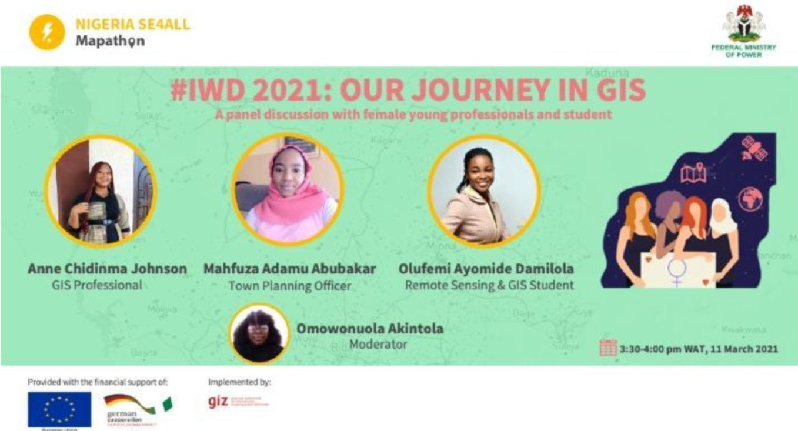
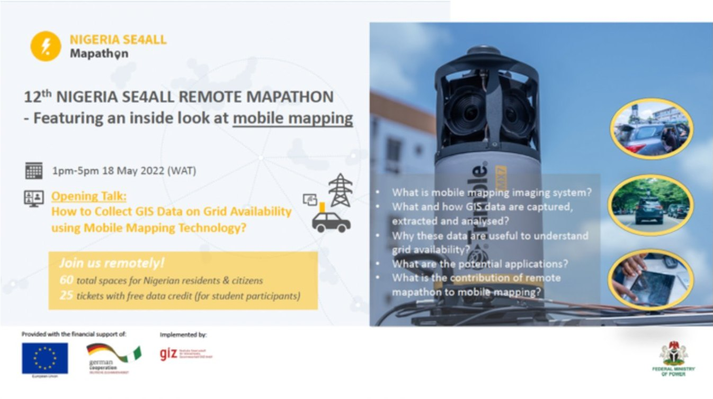

The Nigeria SE4ALL Mapathon is a series of map hackathons run by the Nigerian Energy Support Programme (NESP) — a technical assistance programme co-funded by the European Union (EU) and the German Federal Ministry for Economic Cooperation and Development (BMZ), and implemented by GIZ in collaboration with the Federal Ministry of Power (FMP).
Because of the pandemic, the first mapathon was held remotely on 7 July 2020. Since then, 12 remote mapathons have been held, followed by the first physical mapathon in Abuja on 7 July 2022 — celebrating the two-year anniversary of the first event and the relaunch of the Nigeria SE4ALL Platform V3.0 (watch the event highlight video). In total, the events have attracted over 280 participants, both students and professionals, from all over Nigeria.
Objectives
The overall objectives of our mapathon events are:
- Providing training for participants, especially students, on mapping and GIS topics — introducing them to Geographic Information Systems (GIS) and geospatial tools such as Java OpenStreetMap (JOSM) for contributing to OpenStreetMap (OSM).
- Promoting the activities of the Nigeria SE4ALL initiative by introducing participants to the newly launched platform, its functionalities and its data-gathering efforts.
- Building a strong mapping community in Nigeria through the mapathon Slack workspace, now with over 400 mappers.
What happens at a mapathon
During the four-hour event, participants introduce themselves and learn from industry experts in special sessions — for example, a mobile mapping demo introducing the device used to collect data on grid availability, and a women’s panel celebrating International Women’s Day, where participants heard personal stories from women in the geospatial industry.

During the mapping session, new mappers are taken through a step-by-step tutorial while experienced mappers go straight to the mapping tasks. After the event, all participants receive an e-certificate of participation, and the top mapper — with the highest number of buildings mapped — receives an e-certificate of mapping champion.

Results and feedback
As a direct result of the mapathons, over 75,000 buildings have been mapped in off-grid areas of Kogi, Yobe and Imo using OSM, contributing to the base data that supports electrification planning. The event has also improved along the way, thanks to feedback and suggestions from past participants:
The mapathon went beyond my expectation — the introduction was on point and very informative as well.Past participant
The experience was awesome and I would like to take part in subsequent events to increase my knowledge and expertise on the subject matter.Past participant
Everything about the project is awesome.Past participant
Definitely recommend.Past participant
Why it matters
The mapathon is critical to NESP’s goal of generating the most accurate data to empower electrification planning in Nigeria. Remotely mapping a location provides initial data on the number of buildings — and therefore households — and supports decisions on energy projects, such as estimating the number of potential customers and approximating energy demand to size the power assets to install.
This data also supports on-site data gathering on large users (businesses and community facilities), with the aim of publishing it on the Nigeria SE4ALL webmap to improve decision-making for developers and relevant agencies. Check out the Mapathon YouTube page for the highlight video of the physical mapathon and some of the previous events.
About the Nigerian Energy Support Programme
The Nigerian Energy Support Programme (NESP) is a technical assistance programme co-funded by the European Union and the German Federal Ministry for Economic Cooperation and Development (BMZ), and jointly implemented by the Deutsche Gesellschaft für Internationale Zusammenarbeit (GIZ) GmbH in collaboration with the Federal Ministry of Power (FMP).
Follow us on X (Twitter) at @nigeriase4all and @nesp_nigeria to connect with us or share your feedback.